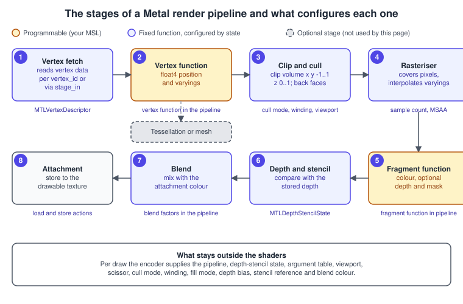
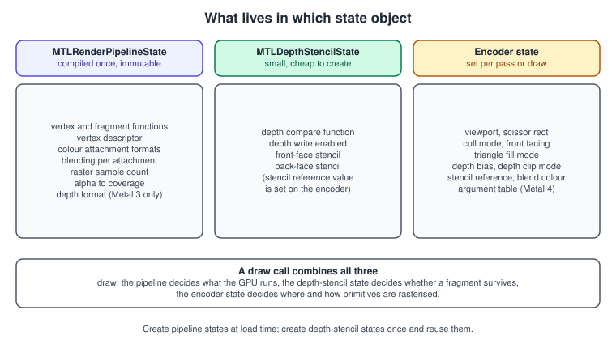
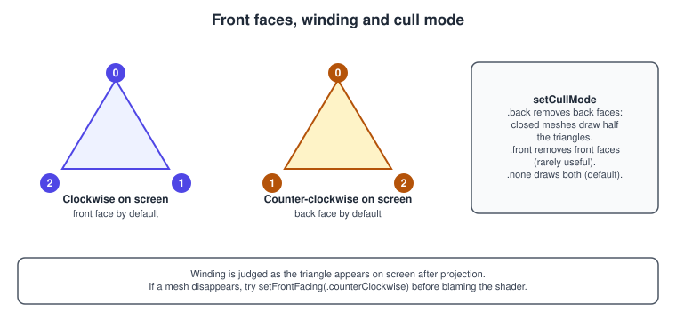
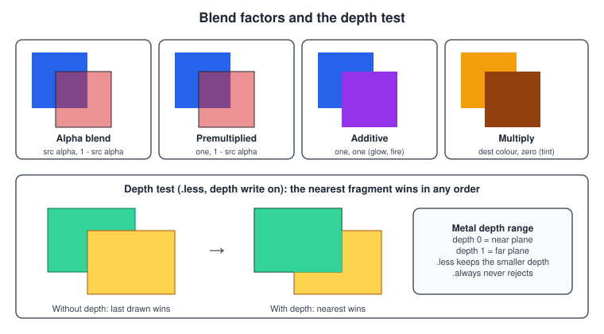
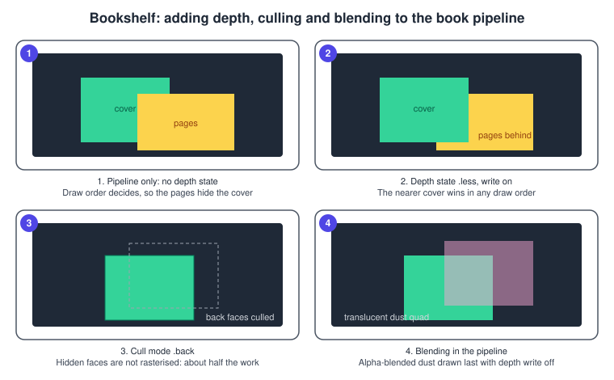

The Metal Render Pipeline
|
This content was generated with the assistance of AI and should be verified against the official documentation before being relied on in production. |
A Metal draw call runs a fixed sequence of stages: vertices are fetched, a vertex function you wrote positions them, the hardware clips and rasterises the triangles, a fragment function you wrote colours each covered pixel, and fixed-function units apply the depth test, the stencil test and blending before the result is stored. Two of those stages are programs; the rest are hardware that you configure with state. What makes Metal different from older APIs is where each piece of state lives: the expensive-to-change parts are baked into one immutable, pre-compiled object (the render pipeline state), the cheap parts are small state objects, and the rest is set on the command encoder per pass or per draw. This page walks through the stages in order, names the object that controls each, shows both the Metal 3 and the Metal 4 way of creating pipelines, and ends with the pipeline of the Bookshelf book.
The facts were checked in November 2026. The versions documented are the Metal 4 core API on the 26 operating systems (MTL4Compiler,
MTL4RenderPipelineDescriptor, MTL4RenderCommandEncoder; Metal 4 hardware is A14 and M1 or later) and the Metal 3 API
(MTLRenderPipelineDescriptor) that remains supported everywhere, with MSL 4.x as the shading language. The code is Swift 6 and MSL; it assumes the
project, shared header and MTKView host from Hello Triangle with Metal 4 and
MetalKit, MTKView and SwiftUI. The language itself is covered in
The Metal Shading Language.
In the Bookshelf running example this page covers the pipeline of the lit, rotating book: an indexed box with positions, normals and texture coordinates, a depth test so the faces occlude each other correctly, back-face culling, and later a second pipeline with alpha blending for the dust particles. The general concept of the pipeline is in The Rendering Pipeline; blending theory is in Transparency, Blending and Post-Processing; the other APIs' versions are The OpenGL Rendering Pipeline and The WebGL Rendering Pipeline.
The stages and their state

| Stage | Kind | Configured by | Notes |
|---|---|---|---|
1. Vertex fetch |
Fixed |
|
Reads attributes from the buffers bound for the draw. Skipped when the shader indexes a buffer with |
2. Vertex function |
Programmable |
The |
Runs once per vertex (and per instance). Must return a |
3. Clip and cull |
Fixed |
Encoder: |
Clips against the volume x and y in -w..w, z in 0..w. Removes back faces if asked. Maps NDC to the viewport. |
4. Rasteriser |
Fixed |
Pipeline: sample count, alpha-to-coverage. Encoder: |
Finds covered pixels (and samples) and interpolates the vertex function’s outputs. |
5. Fragment function |
Programmable |
The |
Runs per covered pixel (per sample with |
6. Depth and stencil |
Fixed |
|
Compares the fragment depth with the stored depth; the stencil test runs alongside. |
7. Blend |
Fixed |
Per colour attachment in the pipeline descriptor; |
Combines the fragment colour with what is already in the attachment. |
8. Attachment |
Memory |
The pass descriptor’s load and store actions |
Writes to the drawable or to an offscreen texture, see Render Passes and Load/Store Actions. |
On Apple GPUs the hardware is tile based: the vertex stage runs for the whole pass first, the triangles are sorted into screen tiles, and then each tile is shaded from fast on-chip memory with hidden-surface removal. That is why depth testing is cheap and why load and store actions matter so much; the architecture is explained in GPU Architecture and TBDR.
Which state lives where

The rule of thumb: anything the shader compiler needs to know to generate the final GPU code goes into the pipeline. That includes the attachment formats and the blend equation, because on some GPUs blending is implemented as extra shader code at the end of the fragment function. Anything that is just a hardware register (viewport, cull mode, depth bias) is encoder state and can change between draws for free. Depth-stencil state is separate so that the same pipeline can be used with different depth tests.
Vertex fetch and the vertex descriptor
Metal gives the vertex function two ways to get its data.
-
Manual fetch. The shader receives a buffer pointer and indexes it with
[[vertex_id]], as the hello triangle did. There is no vertex descriptor. This is flexible (structure of arrays, packed data, compression) and is the style used with argument buffers and GPU-driven rendering. -
Stage-in. The vertex function declares a struct parameter with
[[stage_in]], each member tagged with[[attribute(n)]], and the pipeline’sMTLVertexDescriptorsays where attribute n comes from. The hardware fetch unit converts formats for you (for example.half2tofloat2, or.uchar4Normalizedto a normalisedfloat4).
The descriptor has two tables:
| Table | Entry fields | Meaning |
|---|---|---|
|
|
Attribute n is read as |
|
|
How far apart consecutive elements are in buffer slot i, and when the read position advances: |
// ShaderTypes.h (additions for the book)
typedef NS_ENUM(NSInteger, BookBufferIndex) {
BookBufferIndexMeshVertices = 0,
BookBufferIndexUniforms = 1
};
typedef NS_ENUM(NSInteger, VertexAttribute) {
VertexAttributePosition = 0,
VertexAttributeNormal = 1,
VertexAttributeTexCoord = 2
};
typedef struct {
matrix_float4x4 viewProjection;
matrix_float4x4 model;
vector_float3 lightDirection; // direction the light travels, unit length; occupies 16 bytes
} BookUniforms;import Metal
/// Interleaved layout: position (3 floats), normal (3 floats), uv (2 floats) = 32 bytes per vertex.
func makeBookVertexDescriptor() -> MTLVertexDescriptor {
let descriptor = MTLVertexDescriptor()
let buffer = BookBufferIndex.meshVertices.rawValue
let position: MTLVertexAttributeDescriptor = descriptor.attributes[VertexAttribute.position.rawValue]
position.format = .float3
position.offset = 0
position.bufferIndex = buffer
let normal: MTLVertexAttributeDescriptor = descriptor.attributes[VertexAttribute.normal.rawValue]
normal.format = .float3
normal.offset = 12
normal.bufferIndex = buffer
let uv: MTLVertexAttributeDescriptor = descriptor.attributes[VertexAttribute.texCoord.rawValue]
uv.format = .float2
uv.offset = 24
uv.bufferIndex = buffer
let layout: MTLVertexBufferLayoutDescriptor = descriptor.layouts[buffer]
layout.stride = 32
layout.stepFunction = .perVertex
layout.stepRate = 1
return descriptor
}Source: Apple: MTLVertexDescriptor
Because the descriptor decouples the memory layout from the shader’s types, the shader may declare float3 while the buffer stores three tightly packed floats (12
bytes). The padding rules only apply when a struct is read directly through a pointer. The layout of buffers and index data is the subject of
Buffers and Vertex Descriptors; Model I/O can produce a matching descriptor from a loaded mesh, see
Models with Model I/O and USD.
The vertex and fragment functions
// Shaders.metal (the book)
#include <metal_stdlib>
#include "ShaderTypes.h"
using namespace metal;
struct BookVertexIn {
float3 position [[attribute(VertexAttributePosition)]];
float3 normal [[attribute(VertexAttributeNormal)]];
float2 uv [[attribute(VertexAttributeTexCoord)]];
};
struct BookVertexOut {
float4 position [[position]];
float3 worldNormal; // interpolated across the triangle, perspective-correct by default
float2 uv;
};
vertex BookVertexOut bookVertex(BookVertexIn in [[stage_in]],
constant BookUniforms &uniforms [[buffer(BookBufferIndexUniforms)]])
{
BookVertexOut out;
float4 world = uniforms.model * float4(in.position, 1.0);
out.position = uniforms.viewProjection * world;
out.worldNormal = (uniforms.model * float4(in.normal, 0.0)).xyz; // valid for rotations and uniform scale
out.uv = in.uv;
return out;
}
fragment float4 bookFragment(BookVertexOut in [[stage_in]],
constant BookUniforms &uniforms [[buffer(BookBufferIndexUniforms)]])
{
float3 n = normalize(in.worldNormal);
float diffuse = saturate(dot(n, -uniforms.lightDirection));
float3 base = float3(0.55, 0.12, 0.10); // book-cover red until the textures arrive
return float4(base * (0.25 + 0.75 * diffuse), 1.0); // ambient plus Lambert
}Vertex function outputs and interpolation
-
[[position]](required) is the clip-space position.[[point_size]]sets the size of point primitives and[[clip_distance]]adds user clip planes.[[render_target_array_index]],[[viewport_array_index]]and[[amplification_id]]-driven outputs route primitives to array slices, viewports or eyes (used for cube maps, cascades and stereo). -
Other members are varyings. By default they are interpolated perspective-correctly with the centre of the pixel. The interpolation attributes change that:
[[flat]](take the value of the provoking vertex, for IDs and integers),[[center_no_perspective]](screen-linear),[[centroid_perspective]](sampled inside the primitive, avoids MSAA edge artefacts) and[[sample_perspective]](per-sample, forces per-sample shading). -
Integer varyings must be
[[flat]].
Fragment function inputs and outputs
-
Inputs: the interpolated struct with
[[stage_in]], plus built-ins such as[[position]](the pixel position),[[front_facing]],[[sample_id]],[[primitive_id]]and[[barycentric_coord]]. -
Outputs: a
float4/half4for one colour attachment, or a struct with[[color(n)]]members for several (a G-buffer), optionally[[depth(any)]]and[[sample_mask]]. Writing depth or discarding fragments (discard_fragment()) turns off the early depth test for that function, because the hardware cannot know the depth or the coverage before the shader runs. The[[early_fragment_tests]]function attribute forces the tests to run before the shader when you know it is safe. -
Precision:
halfis faster and uses fewer registers on Apple GPUs; usefloatfor positions and anything accumulated.
Clipping, winding and culling

After the vertex function the hardware clips primitives against the view volume: x and y between -w and +w and z between 0 and w, so depth in normalised device coordinates runs from 0 (near) to 1 (far), unlike OpenGL’s -1 to 1. See Math for 3D with simd for projection matrices that produce this range.
| Encoder call | Values | Default | Use |
|---|---|---|---|
|
|
|
|
|
|
|
glTF, USD and most modelling tools export counter-clockwise front faces, so Bookshelf sets |
|
|
the whole attachment |
Maps NDC to pixels (y down in viewport space) and NDC depth to |
|
|
the whole attachment |
Discards fragments outside a rectangle, which is handy for UI and for limiting a pass to the dirty area. |
|
|
|
|
|
|
|
|
|
floats |
0 |
Offsets depth to fight shadow acne and z-fighting of decals. |
Depth and stencil
The depth test is configured by an immutable MTLDepthStencilState created from a descriptor and set on the encoder. The depth attachment must exist in the pass (MTKView.depthStencilPixelFormat
set to .depth32Float).
func makeDepthState(device: MTLDevice, compare: MTLCompareFunction = .less, write: Bool = true) -> MTLDepthStencilState? {
let descriptor = MTLDepthStencilDescriptor()
descriptor.depthCompareFunction = compare // .less: keep fragments nearer than the stored depth
descriptor.isDepthWriteEnabled = write // false for translucent geometry drawn after the opaque
descriptor.label = write ? "Depth less, write" : "Depth less, no write"
return device.makeDepthStencilState(descriptor: descriptor)
}Source: Apple: MTLDepthStencilDescriptor
| Option | Values | Notes |
|---|---|---|
|
|
The default |
|
Bool |
Off for blended geometry: it should be tested against the opaque depth but not occlude later translucent surfaces. |
|
|
Stencil operations are |
Blending
Blending combines the fragment colour \( C_s \) (source) with the colour already in the attachment \( C_d \) (destination). With blend operation add:
\[ C_{ out } = F_s \cdot C_s + F_d \cdot C_d \]
The factors \( F_s \) and \( F_d \) come from MTLBlendFactor (.zero, .one, .sourceColor, .oneMinusSourceColor, .sourceAlpha, .oneMinusSourceAlpha, .destinationColor,
.destinationAlpha, .blendColor and others), and the operation is .add, .subtract, .reverseSubtract, .min or .max. RGB and alpha have separate factors and operations, and the
writeMask selects which channels are written at all.

| Effect | Source factor | Destination factor | Remarks |
|---|---|---|---|
Alpha blend (straight alpha) |
|
|
\( C_{ out } = \alpha C_s + (1 - \alpha) C_d \). Dust, glass, UI. Texture edges halo unless the colour is bled into transparent texels. |
Premultiplied alpha |
|
|
The fragment already multiplied colour by alpha. Filters correctly and is the format of most compositing; preferred for textures with soft edges. |
Additive |
|
|
Glows, fire, light shafts. Order independent, saturates to white. |
Multiply |
|
|
Tints and fake shadows. Order independent. |
Blending reads the attachment, so it costs bandwidth and prevents some hidden-surface optimisations. Draw opaque geometry first with depth writes on, then translucent geometry sorted
back to front with depth writes off. Blending is order dependent for alpha, which is why sorting (or order-independent transparency, see
Transparency, Blending and Post-Processing) is needed. Blending on an _srgb attachment format happens in linear space and the result is encoded on write.
Creating pipeline states
Metal 3: MTLRenderPipelineDescriptor
func makeBookPipelineMetal3(device: MTLDevice, library: MTLLibrary,
colorFormat: MTLPixelFormat, depthFormat: MTLPixelFormat) throws -> MTLRenderPipelineState {
let descriptor = MTLRenderPipelineDescriptor()
descriptor.label = "Book pipeline"
descriptor.vertexFunction = library.makeFunction(name: "bookVertex")
descriptor.fragmentFunction = library.makeFunction(name: "bookFragment")
descriptor.vertexDescriptor = makeBookVertexDescriptor()
descriptor.colorAttachments[0].pixelFormat = colorFormat
descriptor.depthAttachmentPixelFormat = depthFormat // must equal the pass's depth texture format
return try device.makeRenderPipelineState(descriptor: descriptor)
}
func makeDustPipelineMetal3(device: MTLDevice, library: MTLLibrary,
colorFormat: MTLPixelFormat, depthFormat: MTLPixelFormat) throws -> MTLRenderPipelineState {
let descriptor = MTLRenderPipelineDescriptor()
descriptor.label = "Dust pipeline"
descriptor.vertexFunction = library.makeFunction(name: "dustVertex")
descriptor.fragmentFunction = library.makeFunction(name: "dustFragment")
let color: MTLRenderPipelineColorAttachmentDescriptor = descriptor.colorAttachments[0]
color.pixelFormat = colorFormat
color.isBlendingEnabled = true
color.rgbBlendOperation = .add
color.alphaBlendOperation = .add
color.sourceRGBBlendFactor = .sourceAlpha
color.destinationRGBBlendFactor = .oneMinusSourceAlpha
color.sourceAlphaBlendFactor = .one
color.destinationAlphaBlendFactor = .oneMinusSourceAlpha
descriptor.depthAttachmentPixelFormat = depthFormat
return try device.makeRenderPipelineState(descriptor: descriptor)
}Metal 3 compiles the pipeline inside makeRenderPipelineState, which blocks the calling thread (an async variant and a completion-handler variant exist). Other descriptor properties worth
knowing: rasterSampleCount (MSAA), isAlphaToCoverageEnabled, isRasterizationEnabled (turn off for vertex-only passes such as transform feedback emulation), inputPrimitiveTopology, maxVertexAmplificationCount
(stereo and cascades), supportIndirectCommandBuffers and binaryArchives (pre-compiled results, see
Shader Compilation and Pipeline Caching).
Metal 4: MTL4Compiler and MTL4RenderPipelineDescriptor
Metal 4 separates the description of a pipeline from the compiler that builds it. The descriptor refers to functions through function descriptors (so a function can later be specialised or linked), and the compiler is an object you create, own and schedule.
import Metal
@available(iOS 26.0, macOS 26.0, tvOS 26.0, visionOS 26.0, *)
struct Metal4Pipelines {
let compiler: MTL4Compiler
init(device: MTLDevice) throws {
let descriptor = MTL4CompilerDescriptor()
descriptor.label = "Bookshelf compiler"
compiler = try device.makeCompiler(descriptor: descriptor)
}
private func function(_ name: String, in library: MTLLibrary) -> MTL4LibraryFunctionDescriptor {
let descriptor = MTL4LibraryFunctionDescriptor()
descriptor.library = library
descriptor.name = name
return descriptor
}
/// Opaque, depth-tested book pipeline. The Metal 4 descriptor has no depth format property.
func makeBookPipeline(library: MTLLibrary, colorFormat: MTLPixelFormat) throws -> MTLRenderPipelineState {
let descriptor = MTL4RenderPipelineDescriptor()
descriptor.label = "Book pipeline"
descriptor.vertexFunctionDescriptor = function("bookVertex", in: library)
descriptor.fragmentFunctionDescriptor = function("bookFragment", in: library)
descriptor.vertexDescriptor = makeBookVertexDescriptor()
descriptor.colorAttachments[0].pixelFormat = colorFormat
return try compiler.makeRenderPipelineState(descriptor: descriptor,
dynamicLinkingDescriptor: nil,
compilerTaskOptions: nil)
}
/// Alpha-blended dust pipeline.
func makeDustPipeline(library: MTLLibrary, colorFormat: MTLPixelFormat) async throws -> MTLRenderPipelineState {
let descriptor = MTL4RenderPipelineDescriptor()
descriptor.label = "Dust pipeline"
descriptor.vertexFunctionDescriptor = function("dustVertex", in: library)
descriptor.fragmentFunctionDescriptor = function("dustFragment", in: library)
let color: MTL4RenderPipelineColorAttachmentDescriptor = descriptor.colorAttachments[0]
color.pixelFormat = colorFormat
color.blendingState = .enabled
color.rgbBlendOperation = .add
color.alphaBlendOperation = .add
color.sourceRGBBlendFactor = .sourceAlpha
color.destinationRGBBlendFactor = .oneMinusSourceAlpha
color.sourceAlphaBlendFactor = .one
color.destinationAlphaBlendFactor = .oneMinusSourceAlpha
// The asynchronous variant returns immediately and finishes on a background queue.
return try await compiler.makeRenderPipelineState(descriptor: descriptor,
dynamicLinkingDescriptor: nil,
compilerTaskOptions: nil)
}
}The differences from Metal 3 that matter in practice:
| Topic | Metal 3 | Metal 4 |
|---|---|---|
Where compilation happens |
Inside the device; one concurrency setting ( |
In an |
Functions |
|
|
Blending |
|
|
Depth and stencil formats |
|
No such properties on |
Primitive topology, rasterisation, amplification |
|
The same properties exist, plus |
Caching |
|
|
Result type |
|
The same |
Unspecialized pipelines
Many pipelines differ only in details such as the blend state or the output pixel format: the book rendered to the drawable, to an HDR target and to a shadow map uses the same shader. Metal 4 lets you
compile the common part once. Configure the properties that vary as unspecialised (blendingState = .unspecialized, pixelFormat = .unspecialized), compile that descriptor, and later create each
concrete pipeline with makeRenderPipelineStateBySpecialization(descriptor:pipeline:), passing a descriptor that supplies the missing values. The expensive shader body is not recompiled, and the
documentation notes that this saves both time and memory. An unspecialised blend state behaves as disabled until it is specialised.
Drawing the book
The pipeline, depth state and encoder state come together in the pass. A procedural box with 24 vertices (four per face so that each face has its own normal and uv) and 36 indices:
import Metal
struct BoxMesh {
let vertices: MTLBuffer
let indices: MTLBuffer
let indexCount: Int
}
/// An indexed box with outward normals and counter-clockwise front faces.
func makeBox(device: MTLDevice, size: SIMD3<Float>) -> BoxMesh? {
// For each face: normal n, tangent u, bitangent v with u x v = n.
let faces: [(n: SIMD3<Float>, u: SIMD3<Float>, v: SIMD3<Float>)] = [
([ 1, 0, 0], [0, 1, 0], [0, 0, 1]), ([-1, 0, 0], [0, 0, 1], [0, 1, 0]),
([ 0, 1, 0], [0, 0, 1], [1, 0, 0]), ([ 0, -1, 0], [1, 0, 0], [0, 0, 1]),
([ 0, 0, 1], [1, 0, 0], [0, 1, 0]), ([ 0, 0, -1], [0, 1, 0], [1, 0, 0]),
]
let corners: [(Float, Float)] = [(-1, -1), (1, -1), (1, 1), (-1, 1)]
let uvs: [(Float, Float)] = [(0, 1), (1, 1), (1, 0), (0, 0)]
var floats: [Float] = []
var indices: [UInt16] = []
for (faceIndex, face) in faces.enumerated() {
for (corner, uv) in zip(corners, uvs) {
let p = (face.n + face.u * corner.0 + face.v * corner.1) * 0.5 * size
floats += [p.x, p.y, p.z, face.n.x, face.n.y, face.n.z, uv.0, uv.1]
}
let base = UInt16(faceIndex * 4)
indices += [base, base + 1, base + 2, base, base + 2, base + 3]
}
guard let vertexBuffer = device.makeBuffer(bytes: floats, length: floats.count * MemoryLayout<Float>.stride,
options: .storageModeShared),
let indexBuffer = device.makeBuffer(bytes: indices, length: indices.count * MemoryLayout<UInt16>.stride,
options: .storageModeShared) else { return nil }
vertexBuffer.label = "Book vertices"
indexBuffer.label = "Book indices"
return BoxMesh(vertices: vertexBuffer, indices: indexBuffer, indexCount: indices.count)
}Source: Apple: MTLBuffer
Encoding the draw with the Metal 4 encoder (the argument table holds the vertex buffer and the uniforms; the pass descriptor comes from MTKView.currentMTL4RenderPassDescriptor):
@available(iOS 26.0, macOS 26.0, tvOS 26.0, visionOS 26.0, *)
func encodeBook(encoder: any MTL4RenderCommandEncoder,
pipeline: MTLRenderPipelineState,
depthState: MTLDepthStencilState,
table: MTL4ArgumentTable,
mesh: BoxMesh,
uniformsAddress: MTLGPUAddress,
drawableSize: CGSize) {
encoder.label = "Book pass"
encoder.setRenderPipelineState(pipeline)
encoder.setDepthStencilState(depthState)
encoder.setCullMode(.back)
encoder.setFrontFacing(.counterClockwise)
encoder.setViewport(MTLViewport(originX: 0, originY: 0,
width: Double(drawableSize.width), height: Double(drawableSize.height),
znear: 0, zfar: 1))
table.setAddress(mesh.vertices.gpuAddress, index: BookBufferIndex.meshVertices.rawValue)
table.setAddress(uniformsAddress, index: BookBufferIndex.uniforms.rawValue)
encoder.setArgumentTable(table, stages: [.vertex, .fragment])
encoder.drawIndexedPrimitives(primitiveType: .triangle,
indexCount: mesh.indexCount,
indexType: .uint16,
indexBuffer: mesh.indices.gpuAddress,
indexBufferLength: mesh.indices.length)
}Source: Apple: MTL4RenderCommandEncoder
With Metal 3 the same pass uses setVertexBuffer(_:offset:index:), setVertexBytes or setFragmentBytes for the uniforms, and drawIndexedPrimitives(type:indexCount:indexType:indexBuffer:indexBufferOffset:); the
cull, winding, viewport and depth calls have the same names. Both generations need the pass to contain a depth texture whose format matches the pipeline (Metal 3) or the depth-stencil state, which is why the host sets
depthStencilPixelFormat = .depth32Float once the book needs it. Everything the GPU reads in Metal 4 (the vertex buffer, the index buffer and the uniform ring) must be in a residency set, as shown in
Hello Triangle with Metal 4.

Common mistakes
| Symptom | Cause | Fix |
|---|---|---|
Nothing is drawn after enabling culling |
Winding does not match |
Use |
Faces overlap in the wrong order |
No depth attachment, or the depth state is the default |
Set |
Validation error about pixel formats |
Pipeline attachment format differs from the pass attachment |
Read the formats from the view (or the render target) when building pipelines; recompile when they change. |
Colours wrong by a gamma curve |
Blending or output in an |
Decide once: linear shader output with an |
Translucent objects punch holes in the background |
Depth writes left on for blended geometry |
Use a depth state with |
Hitches when a new object appears |
A pipeline is compiled on first use, on the render thread |
Compile all pipelines at load, use the asynchronous API and warm them up; cache them (see the shader compilation page). |
Stage-in attribute reads zeros |
Attribute index or |
Share the enums through the header; print the descriptor in the Metal debugger. |
Performance notes
-
Create pipelines once. A pipeline compile can take milliseconds to hundreds of milliseconds; never compile in the draw loop. Metal 4’s compiler and the unspecialised-pipeline technique exist to move that work to load time.
-
Sort by pipeline, then by depth. Changing the pipeline is the most expensive state change per draw; changing buffers or textures is cheaper; encoder state is nearly free.
-
Keep the early depth test. Avoid
discard_fragment()and depth writes in the fragment function for opaque meshes; draw alpha-tested foliage in its own pipeline. -
Cull. Back-face culling on closed meshes and frustum culling on the CPU (or GPU, see GPU-Driven Rendering with Indirect Command Buffers) cut vertex and fragment work.
-
Use half precision where colour accuracy allows.
-
Bandwidth. Blending and large render targets are bandwidth bound; prefer
.dontCarestore actions for depth you no longer need.
What changed recently
| Version | Change |
|---|---|
iOS 8, macOS 10.11 (2014) |
|
26 systems (2025) |
|
27 systems (2026) |
MSL 4.1 (placement new, memory-order barriers and atomics, new texture read variants); the render pipeline model is unchanged. |
Where the books are out of date
| Source | Statement | Today |
|---|---|---|
Metal by Tutorials, 4th edition (chapters 3, 4 and 7) |
Teaches the Metal 3 object model (Metal 3, Xcode 15, iOS 17); the 5th edition of November 2025 moved to Swift 6 and the 26 SDKs but still teaches Metal 3. |
Everything in the Metal 3 column above is still valid. Metal 4 adds the compiler object, function descriptors, unspecialised pipelines and argument tables, and its pipeline descriptor no longer takes depth formats. |
Metal Programming Guide (Clayton), chapters 5 and 7 |
Written for Metal 2, Swift 4, Xcode 9 and iOS 11, using |
|